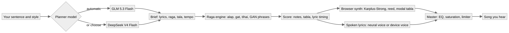
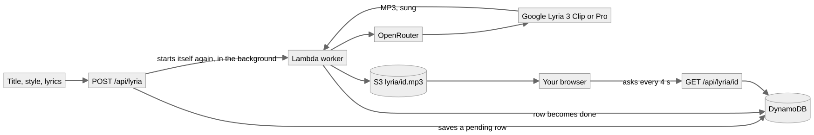
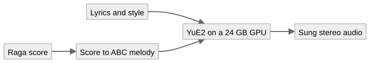
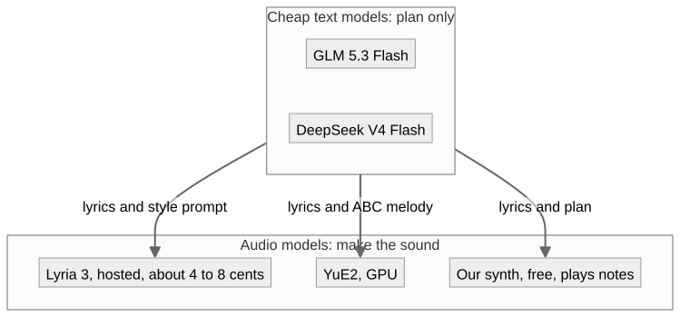
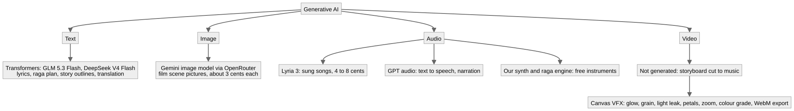

Music, voice and video models: what makes what
mhRaaga makes a song in three jobs. Different models are good at different jobs, and text models such as GLM and DeepSeek can only do the first one. This page shows who does what, what each route costs, and which open-source libraries fit.
The three jobs
| Job | What it produces | Models that can do it |
|---|---|---|
| 1. Plan | Lyrics, raga, tala, tempo, mood | Text models: GLM 5.3 Flash, DeepSeek V4 Flash (cents per thousand songs) |
| 2. Play | The instruments: tanpura, bansuri, tabla, harmonium | Our engine plus the browser synth (free); or an audio model |
| 3. Sing | A human-sounding voice on the melody | Only trained audio models: Google Lyria 3 (hosted), YuE2 (GPU), DiffSinger (needs a trained voice) |
A text model never makes sound. It writes the plan; something else turns it into audio.
Route A: free, built from our own engine

Free to run. The planner costs a fraction of a cent. The voice speaks the words over the music; it does not sing them.
Route B: a full AI song with a singer (Lyria 3)

| Model | What you get | Price |
|---|---|---|
| Lyria 3 Clip | 30-second sung clip | $0.04 |
| Lyria 3 Pro | Full song, about 2 minutes | $0.08 |
These are the only two music models on OpenRouter (checked 17 November 2026). Limits: 3 songs per person per day, $2 per day for the whole site, counted on the Users & cost page.
Route C: GPU singer you run yourself

YuE2 follows our raga melody. It does not run on Lambda (no GPU, 10 GB memory limit, 15-minute limit). Use the Colab notebooks in singer/, or a GPU machine you own. Hindi is not in its list of trained languages.
Where the cheap models fit

Here is what that means in practice: choosing DeepSeek or GLM changes who writes the lyrics and the plan. It does not change how the song sounds, because the sound comes from the synth or from Lyria.
Every kind of generation, and what covers it
Your figure splits generative models into text, image, audio and video. This is what mhRaaga uses for each, and what it does not do yet.

| Kind | Used for | Model | Cost |
|---|---|---|---|
| Text | Lyrics, plans, story outlines, translation | GLM 5.3 Flash or DeepSeek V4 Flash | well under a cent |
| Speech | Narration of poems, stories and film scenes | GPT audio (neural), device voice as back-up | a few cents per new line, cached after |
| Music | Sung songs | Lyria 3 Clip or Pro | $0.04 or $0.08 |
| Music | Free instruments | Our raga engine and browser synth | free |
| Image | Film scene backgrounds | Gemini image model | about $0.034 each (measured) |
| VFX | Glow, vignette, grain, soft focus, light leak, physics petals, slow zoom, colour grade | Canvas and Box2D in the browser | free |
| Video | Whole clips from text | not built: OpenRouter lists two Gemini video models, but their price per clip has not been measured | n/a |
Limits that protect the bill: 5 pictures per person per day and $1 per day for the site; 3 AI songs per person per day and $2 per day for the site; voice $0.60 per person per day and $12 per day for the site. All of it is counted on the Users & cost page.
Open-source libraries that fit this project
Licences and sizes were read from GitHub on 17 November 2026.
| Library | Licence | What it is for | Fit |
|---|---|---|---|
| SpessaSynth | Apache-2.0 | Plays MIDI with real recorded instruments (SoundFont) in the browser | Best next step for a natural sound: swap our synthesized instruments for sampled ones, free to run |
| FluidSynth | LGPL-2.1 | Same idea as a native program | Server-side rendering; needs a native build for Lambda |
| Piper | MIT | Fast local text to speech, CPU | Free spoken voice; speaks, does not sing |
| DiffSinger | Apache-2.0 | Singing-voice synthesis from notes and lyrics | The right kind of tool for free singing, but it needs a trained Hindi voice bank and a GPU to train |
| AudioCraft (MusicGen) | MIT code, model weights are non-commercial | Text to instrumental music | Needs a GPU |
| YuE | see its licence | Lyrics to full song with vocals | Needs a 24 GB GPU; vendored in third_party/YuE |
| pretty-midi | MIT | Read and write MIDI | Useful to export our score as a MIDI file |
| music21 | BSD-3-Clause | Music theory toolkit | Useful for checking notes and scales |
| MoviePy | MIT | Video editing in Python | Joins a song and pictures into a video, free |
Video: open models that generate video from text need large GPUs. The Film studio instead builds a storyboard, then cuts pictures to the song; MoviePy or ffmpeg can join the pieces.
What each route can honestly do
| Route A | Route B | Route C | |
|---|---|---|---|
| Cost per song | about 0 | $0.04 to $0.08 | GPU time |
| Sung voice | no (spoken) | yes | yes |
| Hindi words | yes, spoken | mostly clear, some blur | not a trained language |
| Follows our raga | exactly | loosely, from the style words | follows the melody |
| Instrument realism | synthesized | studio-like | model-made |
If you want a free route that sounds natural, the next piece of work is replacing the synthesized instruments with SoundFont samples through SpessaSynth.